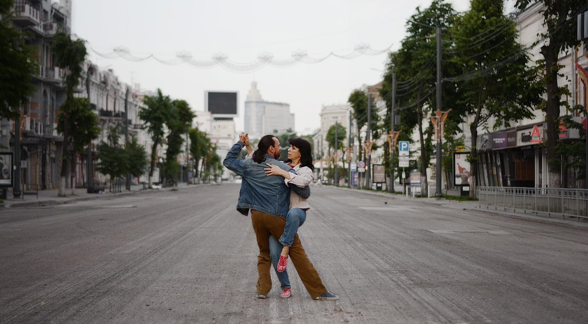
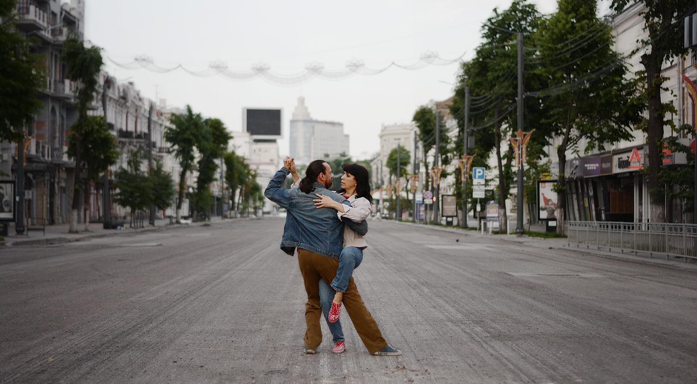

О нас
"Дон Милонгеро" не только школа танцев, это еще и клуб аргентинского танго в Воронеже. С самого начала мы хотели не только учить людей танцевать, но и стремились создать уютное атмосферное место для влюбленных в танго. Наши ученики охотно танцуют в нашем клубе и других местах, вместе ездят на танго-фестивали и милонги в разные города, и даже, бывает, играют танго-свадьбы.
Помимо учебных занятий клуб "Дон Милонгеро" еженедельно проводит в Воронеже милонги (танцевальные вечера), практики для самостоятельных занятий, танго-интенсивы различной тематики. Несколько раз в год мы приглашаем с семинарами в Воронеж преподавателей аргентинского танго из России и других стран. Мы провели множество крупных мероприятий: дни аргентинской культуры в Воронеже, четыре танго-фестиваля, три танго-марафона, несколько флешмобов в знаковых местах города, танго-уикенды, тематические фотовыставки, концерты и мастер-классы. Клуб "Дон Милонгеро" - настоящая точка притяжения всех любителей аргентинского танго Центрального Черноземья.
Наши занятия проходят в светлых уютных залах в центре Воронежа. Кондиционер и вентиляция, танцпол, покрытый ламинатом, зеркала, отдельные раздевалки, станок для отработки индивидуальной техники, уголок, где можно отдохнуть и выпить чашку чая или кофе - всё это для того, чтобы ваше обучение танго было максимально комфортным и эффективным. В нашем клубе - внимательный индивидуальный подход к каждому ученику, веселая, доброжелательная и непринужденная атмосфера. У нас не только учатся танцевать танго, у нас находят друзей!
Преподаватели
 
Дмитрий Баклашов и Светлана Романова. Вместе танцуют с 2006 года. С 2010 года преподают в паре. Учились и продолжают учиться на фестивалях и семинарах практических всех ведущих мировых маэстрос, воспитали сотни хороших танцоров и даже несколько преподавателей танго. В работе руководствуются принципом "лучше всего о преподавателях говорит уровень их учеников ". Проводили семинары в Санкт-Петербурге, Белгороде, Липецке, Орле, Волгограде. Для того, чтобы быть в курсе всех тенденций в современном танго, много путешествуют - принимали участие в фестивалях и марафонах России, Украины и Белоруссии. Дмитрий и Светлана также являются танго-диджеями, изучают историю танго и подготовили больше десяти диджеев, которые ставят музыку на танго-мероприятиях в Воронеже и за его пределами.
Отзывы о школе
кликните на карточку чтобы увидеть другие отзывы
Светлана Коробченко:
"Первый раз я пришла в клуб "Дон Милонгеро" на открытый урок просто посмотреть. Да так и осталась. Но уже не только посмотреть, но и поучиться танцевать аргентинское танго. Потрясающе красивый танец, интересные занятия Димы со Светой, дружеское общение в клубе, еженедельные милонги и веселые праздники - все это создает ту атмосферу, куда хочется приходить снова и снова. Легко и естественно танго стало частью моей жизни, дополнив ее новыми яркими красками. Спасибо Диме и Свете за этот новый опыт, за их участие и поддержку! "
Ирина Гончаренко:
"О клубе можно сказать много всего интересного, но лучше один раз увидеть своими глазами, а еще лучше - придти и почувствовать атмосферу тепла, доверия, непринужденности, искренности, открытости - всего того, чего нам так не хватает во внешнем мире суеты, забот, шаблонов и ограничений. Клуб "Дон Милонгеро" - это место, где время останавливается, сердце открывается, а душа танцует и радуется возможности парить. "
Дмитрий Малюков:
"Дон Милонгеро - это не только интересные занятия, это настоящее погружение в мир танго, в красивую музыку. Это общение с замечательными людьми, это знакомство с культурой Аргентины, это разнообразные весёлые мероприятия. Перечислять можно бесконечно. Лучше прийти, увидеть это всё своими глазами и остаться. "
Евгений Аникеев:
"Никогда не думал, что буду заниматься танцами, и тем более танго, был далёк от всего этого. Но вот пришёл и сходил раз, другой - и подумал, что если уж я ходил до конца недели, то почему бы не завершить месяц? Тем более всё ещё непонятно, как делать вот это вот и вон то ещё... Так и хожу до сих пор, почему-то не надоедает. Постоянно восхищаюсь терпением преподавателей. Вообще в клубе очень комфортно - всегда можно остановиться, попить чаю, посмотреть на танцующих или пообщаться. Или уйти в соседний зал, отдохнуть от всего. А потом вернуться и потанцевать ещё. Регулярные уроки, семинары с ведущими тангерос, еженедельные милонги - всё это мотивирует учиться дальше. "
Любовь Антакова:
"Мне очень очень нравится эта школа. Красиво все, начиная от расположения и заканчивая профессионализмом. Особенно уютный зал, вкусный кофе и добрые учителя. Это место знакомства, дружбы и подъема жизненной энергии. "
Дмитрий Ключанский:
"Очень рад тому, что есть такое место как клуб Дон Милонгеро. Но еще больше рад тому, что могу проводить там время. С удовольствием хожу на занятия и милонги. Там всегда рады тебя видеть, учить, да и просто болтать обо всем. Там очень уютно. Рекомендую всем наш клуб. "
Наши видео
Расписание
| День недели | |
| Понедельник | 19:00 - 20:15 Средняя группа 20.45 - 22.00 Старшая группа |
| Вторник | 19:00 - 20:15 Продолжающая группа 20:45 - 22:00 Начинающая группа |
| Среда | 19:00 - 20:15 Средняя группа 20.45 - 22.00 Старшая группа |
| Четверг | 19:00 - 20:15 Продолжающая группа 20:45 - 22:00 Начинающая группа |
| Пятница | 19.00 - 20.00 Общая техника 20.00 - 22.00 Практика |
| Суббота | 19.00 - 21.00 Практика 21.00 - 24.00 Milonga Simpatica |
| Воскресенье | 14.00 - 18.00 Милонга-практика |